首页
上一页
286
287
288
289
290
291
291
292
293
294
295
296
下一页
末页
defanive2
无尽黑夜
14
今天又有时间玩MC了，继续直播吧！
PS Pixels！
貌似自从MC出名了之后各种游戏都以像素画风作为招牌之一了
（虽然说MC之前也有很多像素游戏）
个人感觉像素画风其实不算特别美观
只不过和MC的主题比较配而已
所以说flappy bird给我的感觉就是作者素材很偷懒（的确嘛。。）
——来自 MCLive
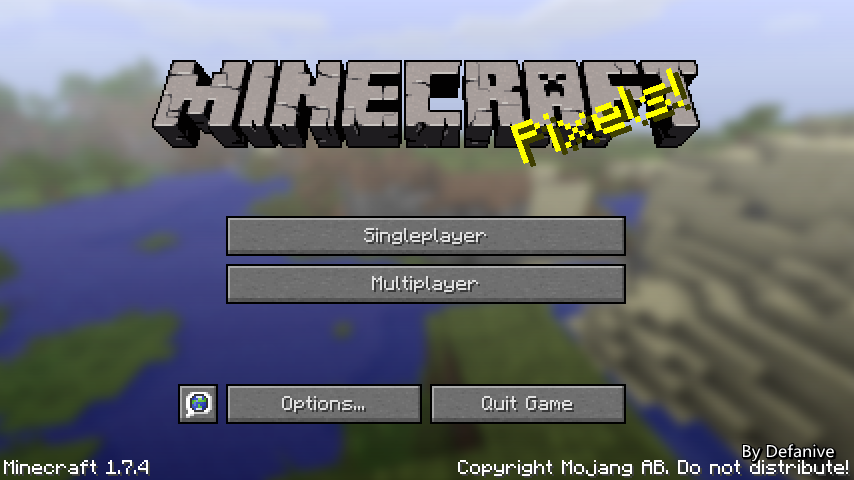
28750楼
2014-06-12 21:34
defanive2
无尽黑夜
14
下午的时候又在YY直播做猪人塔
第二层黑曜石的部分做得差不多了
——来自 MCLive
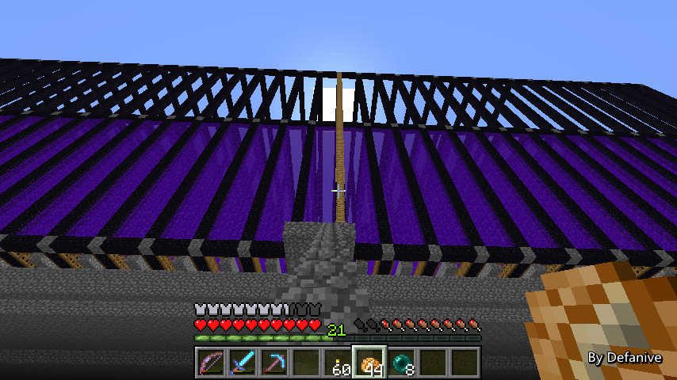
28754楼
2014-06-12 21:40
defanive2
无尽黑夜
14
柱子的部分已经做好了
在做第二层的层顶，大约做了一半多左右
当然啦，这只是第二层的黑曜石部分
做完了还需要铺陷阱门（基本上就等于是铺2次层顶）
以及做中间的隔板
所以说离第二层完成还很遥远的
不过在慢慢接近胜利了
——来自 MCLive
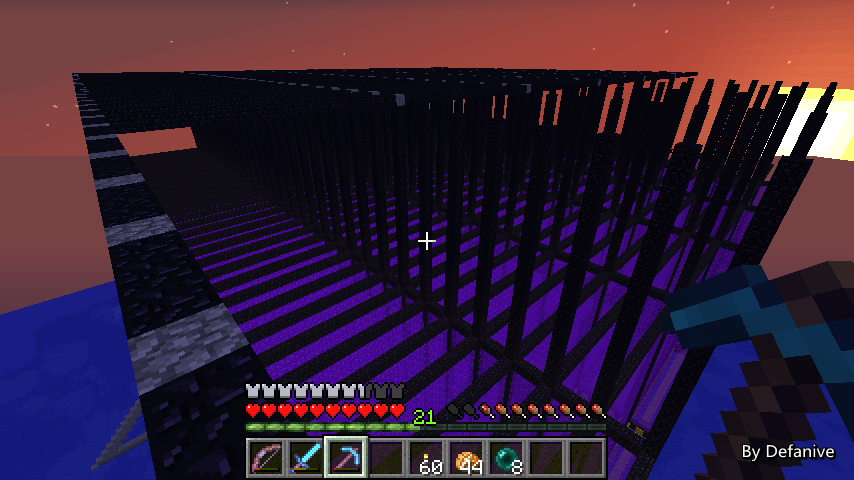
28755楼
2014-06-12 21:43
defanive2
无尽黑夜
14
当然现在有了猪人塔之后金子就再也不缺了
（虽然说金好像本来就没什么用。。）
拿2组回家
——来自 MCLive
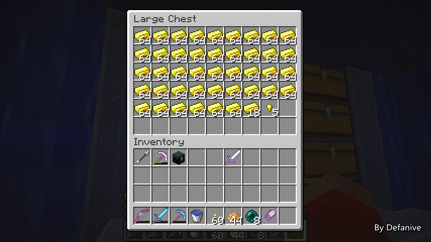
28758楼
2014-06-12 21:45
defanive2
无尽黑夜
14
路过必须要观摩一下 = =
——来自 MCLive
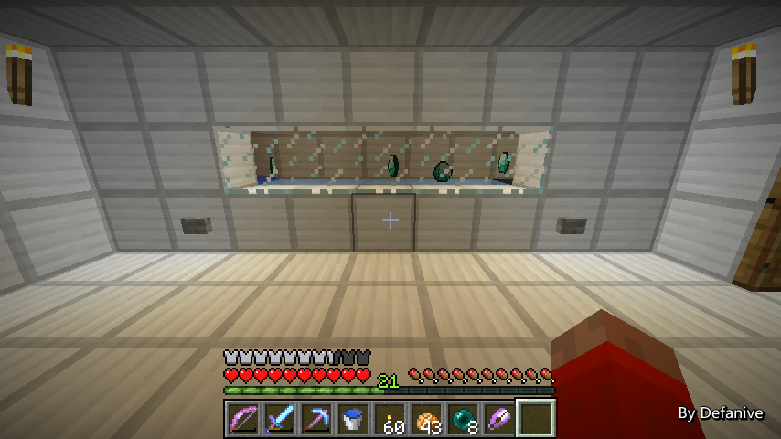
28761楼
2014-06-12 21:47
defanive2
无尽黑夜
14
之前有观众问到炫富机里面物品上传的部分怎么做
貌似上次讲解的时候只具体讲了电路的部分
这一部分现在补上吧
——来自 MCLive
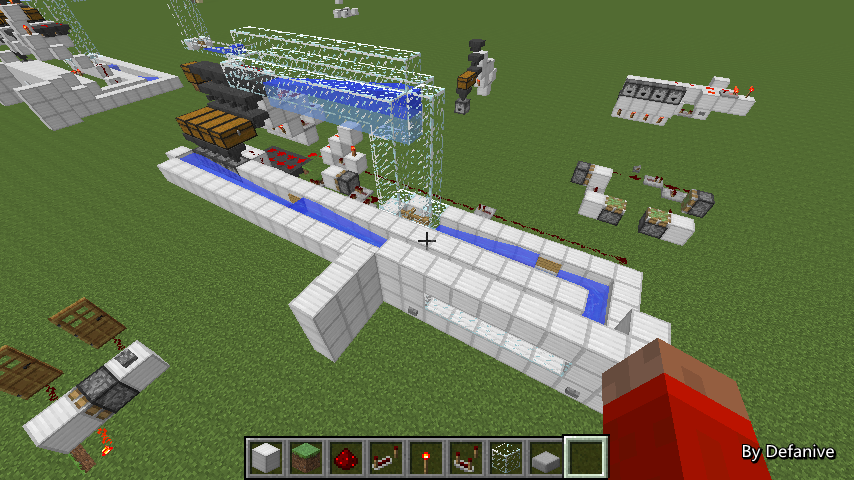
28767楼
2014-06-12 21:49
defanive2
无尽黑夜
14
首先用木栅栏做一个这样的结构
铁块上的木栅栏是物品上传的中心
物品会在这一格上传上去
注意中心木栅栏周围的3个方块必须是实体方块
——来自 MCLive
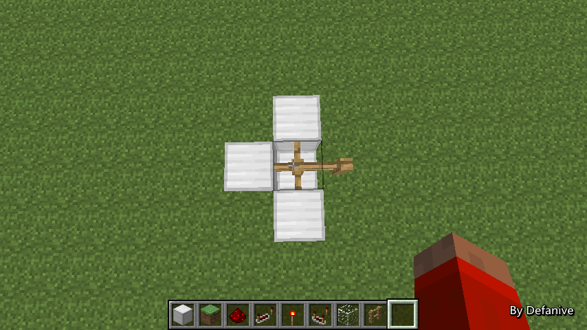
28768楼
2014-06-12 21:51
defanive2
无尽黑夜
14
接下来把木栅栏前面的5格地板换成冰
——来自 MCLive
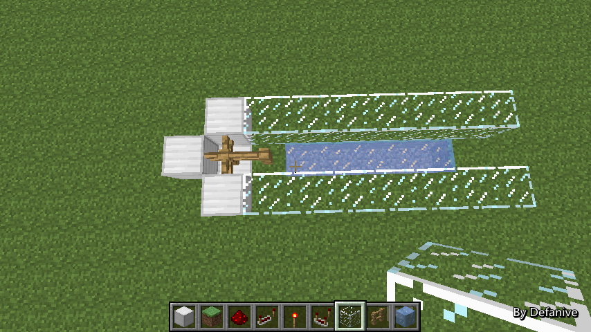
28769楼
2014-06-12 21:53
defanive2
无尽黑夜
14
接下来做一个转角，并且倒上水
水源处将会是物品流的入口
这样的水流布置会保证物品进入冰道时会贴着墙
——来自 MCLive
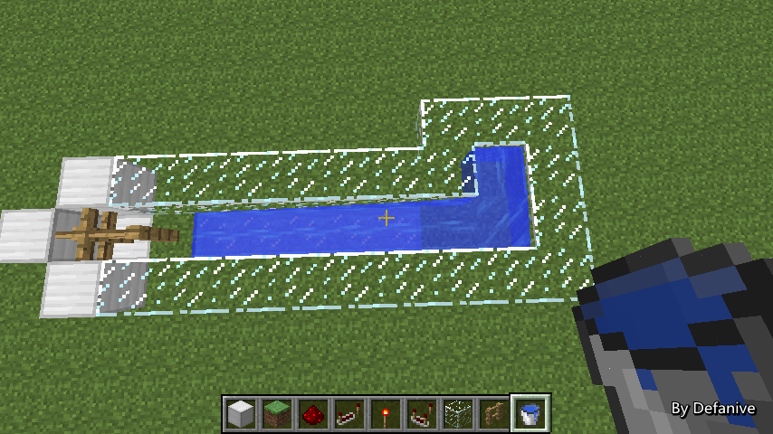
28771楼
2014-06-12 21:54
defanive2
无尽黑夜
14
好吧做错了，5格并是要在中心栅栏的后面5格
也就是说第二个栅栏下面也要是冰
——来自 MCLive
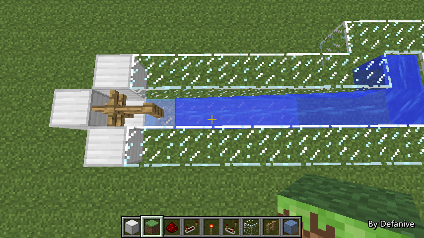
28773楼
2014-06-12 21:56
defanive2
无尽黑夜
14
接下来在中心栅栏向上建十字型的传送带
用任何方块建造都可以，任意高度，只需要保证这部分实心即可
然后把最顶端的十字中心一格给挖掉
那一格将会是物品最终的传送点
——来自 MCLive
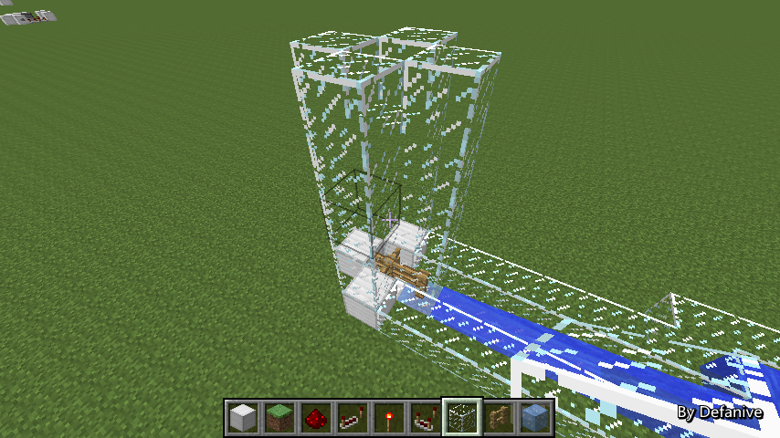
28776楼
2014-06-12 21:59
defanive2
无尽黑夜
14
接下来往水流中扔物品即可
PS 如果不能保证物品会贴墙的话
建议把入口处的水流也改成冰
这样可以保证物品会贴墙进入5格冰区域
——来自 MCLive
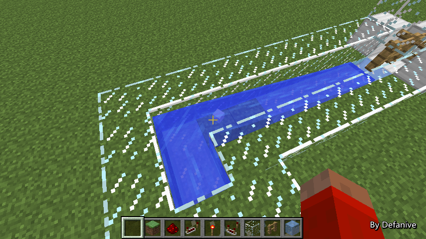
28779楼
2014-06-12 22:01
defanive2
无尽黑夜
14
然后就可以看到物品顺着管道上去了
PS 有些时候物品的位置会显示得有问题
不过的确是顺着上去的
——来自 MCLive
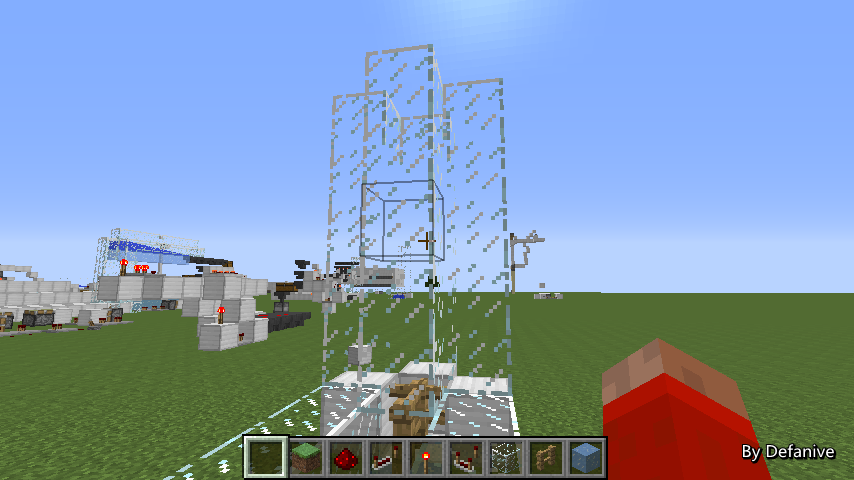
28780楼
2014-06-12 22:02
defanive2
无尽黑夜
14
最后物品就到了顶部的槽中
物品上升就是这样了
原作者是U2B的test137E29
——来自 MCLive
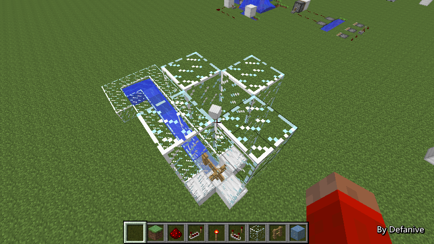
28781楼
2014-06-12 22:06
defanive2
无尽黑夜
14
刚刚的物品上升其实是利用了BUG实现的
那么我们今天也会把眼光放在另外一个BUG上
箭的方块位置记忆BUG
PS 这个BUG是最先由ZipKrowd的oldGannon发现的
——来自 MCLive
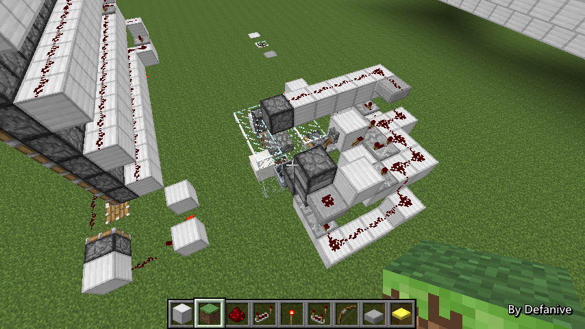
28786楼
2014-06-12 22:18
defanive2
无尽黑夜
14
箭射在方块上，箭就会记忆下这个方块的坐标
例如左边的箭，射在了铁块上箭就记下了铁块的坐标
而射在压力板上就记忆下了压力板的坐标
（是压力板的坐标，而不是红石灯的坐标，也就是说是和铁块在同一高度的）
——来自 MCLive
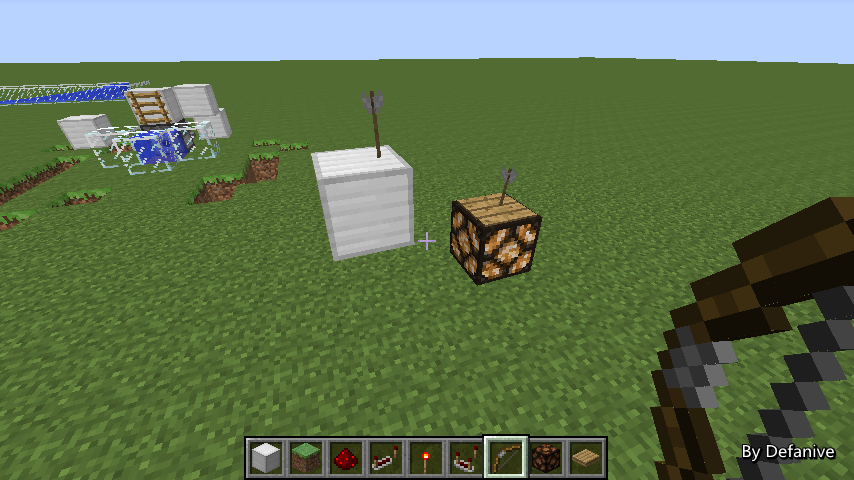
28790楼
2014-06-12 22:26
defanive2
无尽黑夜
14
如果我现在把铁块给打掉的话
箭继续掉落，击中到草地上
但是，箭记忆的坐标是铁块的坐标
击中在草地上的时候，箭仍然认为是击中了之前铁块所在的坐标
虽然说现在那个坐标上已经什么都没有了
但是箭仍然是认为击中了那个坐标上的方块
——来自 MCLive
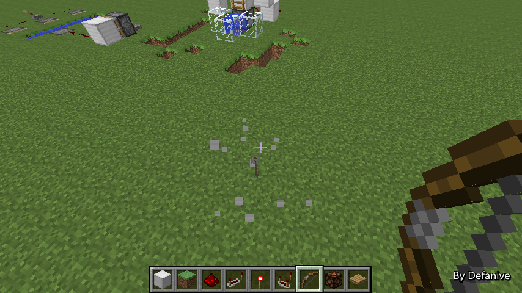
28799楼
2014-06-12 22:30
defanive2
无尽黑夜
14
好像上一条回复大家就已经听出来有哪里不对了
的确如此，箭的坐标不会随时更新听起来真的很有问题
如上做一个装置，红石灯旁边的是白色羊毛
——来自 MCLive
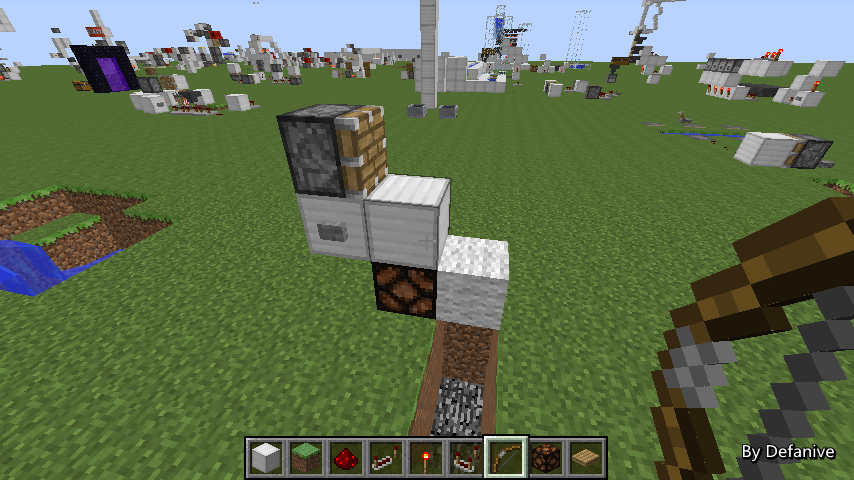
28801楼
2014-06-12 22:33
defanive2
无尽黑夜
14
接下来从下面往白色羊毛上射一只箭
这只箭的作用一会会讲解
——来自 MCLive
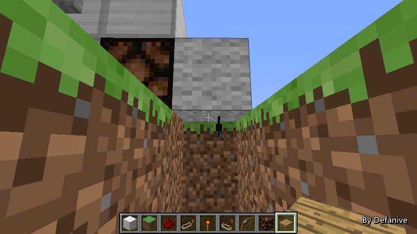
28803楼
2014-06-12 22:35
defanive2
无尽黑夜
14
接下来往红石灯上的铁块上射一只箭
这个时候，箭就记住了这个铁块的坐标
——来自 MCLive
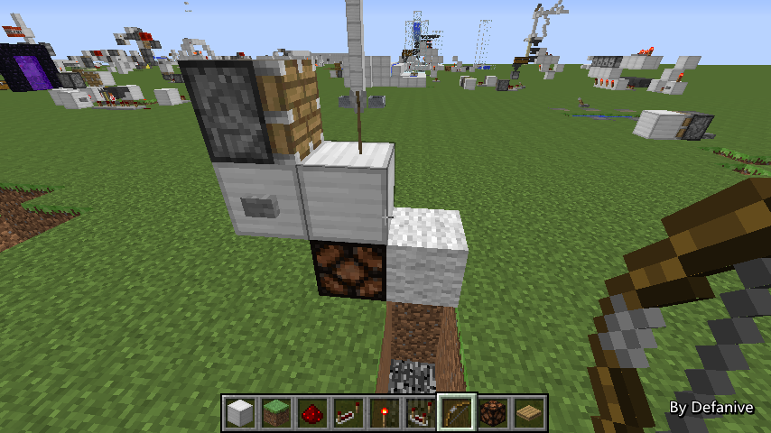
28804楼
2014-06-12 22:36
defanive2
无尽黑夜
14
接下来用活塞把箭推到羊毛上方
PS 推完之后的箭仍然会浮空的
这是另外一个BUG，不过在此比较无关紧要
——来自 MCLive
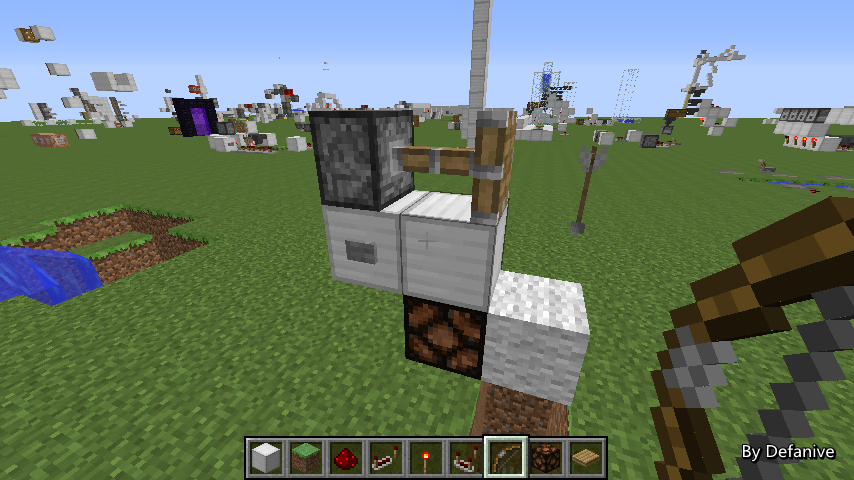
28806楼
2014-06-12 22:39
defanive2
无尽黑夜
14
然后在打破铁块的一瞬间放上压力板
——来自 MCLive
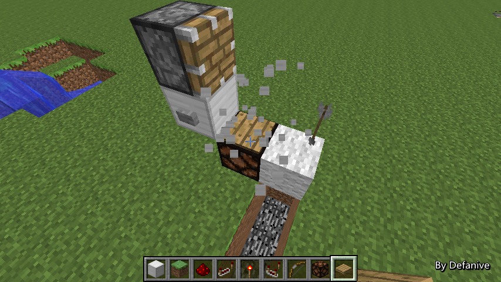
28807楼
2014-06-12 22:41
defanive2
无尽黑夜
14
箭落地之后，白色羊毛居然变成了橙色羊毛！
——来自 MCLive
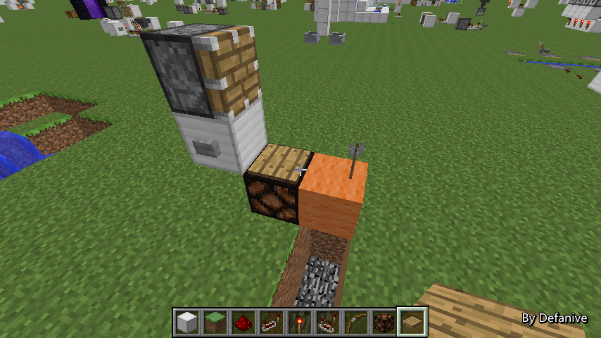
28810楼
2014-06-12 22:45
defanive2
无尽黑夜
14
那么实际上发生了什么呢？
箭在落下击中羊毛的时候，仍然认为是击中了记忆中的坐标
也就是被打掉的铁块的坐标
而在击中羊毛的时候，那个坐标已经变成了压力板
所以说箭就认为自己击中了压力板！
既然箭认为自己击中了压力板，那么就应该把被击中的方块的附加值从0改成1
于是箭就把羊毛的附加值改成了1，变成了橙色羊毛
简单的总结一下就是，箭击中羊毛却认为自己击中的是压力板
——来自 MCLive
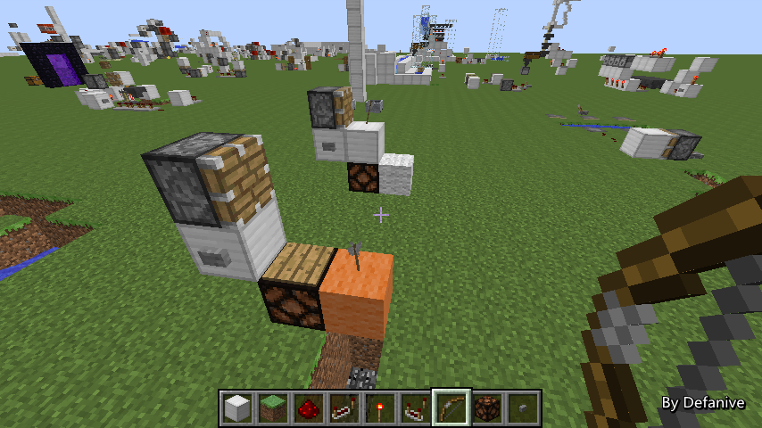
28813楼
2014-06-12 22:53
defanive2
无尽黑夜
14
而之前在羊毛底下射的箭有什么用呢
上面的箭把羊毛误认为压力板之后
就会检查压力板上有没有entity
如果把羊毛想象成压力板的话
上面的箭就没有碰到压力板
所以说下面需要射一只箭来碰到这个想象的压力板
——来自 MCLive
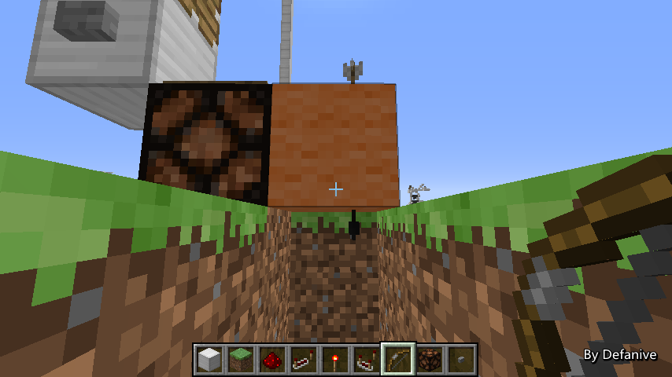
28814楼
2014-06-12 22:55
defanive2
无尽黑夜
14
而这一次，如果我们用金制压力板呢？
金制压力板会根据压力板上的生物数量发出1-15的信号强度
这一次我们在白色羊毛的底下射2只箭
然后再重复上一次的步骤
先把箭推到羊毛上
然后在破坏铁块的一瞬间放上金制压力板
——来自 MCLive
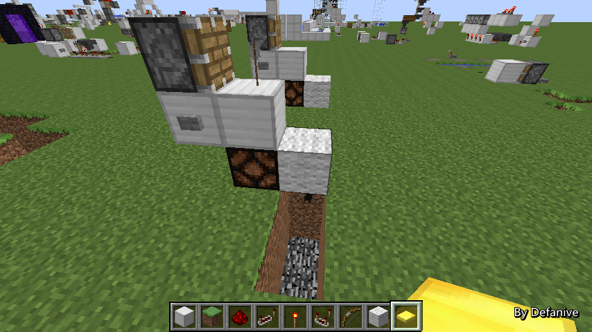
28816楼
2014-06-12 22:59
defanive2
无尽黑夜
14
白色羊毛变成了紫色羊毛，也就是附加值从0变到了2
原因很简单，羊毛底下有2只箭
如果金制压力板上有2只箭的话那么会发出2格的信号
也就是附加值为2
那么就会把羊毛的附加值变成2了
——来自 MCLive
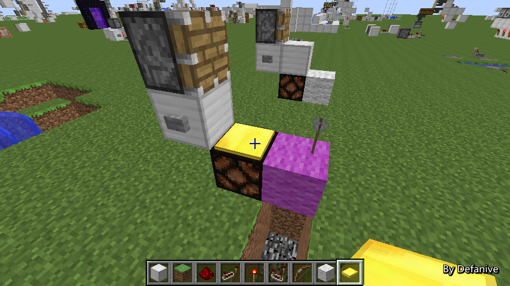
28818楼
2014-06-12 23:03
defanive2
无尽黑夜
14
这个时候相信大家已经有很多想法了
的确，这就是一个可以随意更改方块附加值的机器
只不过这个机器有两个限制：
第一是附加值必须初始为0
以羊毛为例，就是只能把白色羊毛变成其他颜色
第二是这个方块必须有碰撞箱
否则的话箭不会撞到这个方块自然也不能变了
所以说树种是没办法变种类的
——来自 MCLive
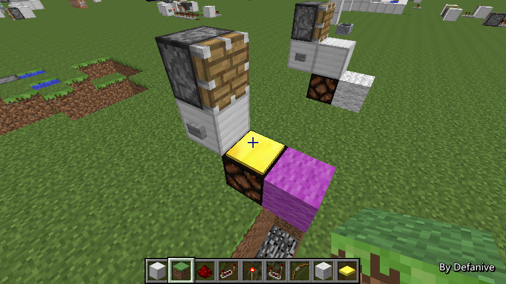
28819楼
2014-06-12 23:07
defanive2
无尽黑夜
14
橡木原木的附加值为0
而云杉、白桦、雨林原木的附加值分别为1、2、3
也就是说通过刚才所演示的机器
我们可以把橡木原木换成另外任意一种原木
——来自 MCLive
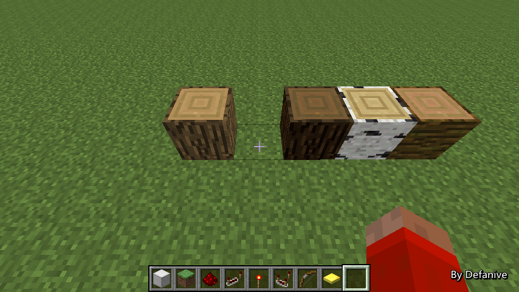
28822楼
2014-06-12 23:12
defanive2
无尽黑夜
14
既然要转换的话，那么效率必须要比去地狱挖要快
但是刚刚的手动操作非常繁琐
这样的话肯定不可能够效率的
那么我们必须要想办法把这个流程做得高效化
同时考虑到我们可能会进行大量的转换
最好能做到尽量自动化
PS 当然啦，放置金踏板是不可能自动化
也就是说无论如何玩家都需要手动放置踏板
但是如果可以做到玩家一直按着右键机器就能转换的话
其实和自动化也差不多了，至少可以AFK了
——来自 MCLive
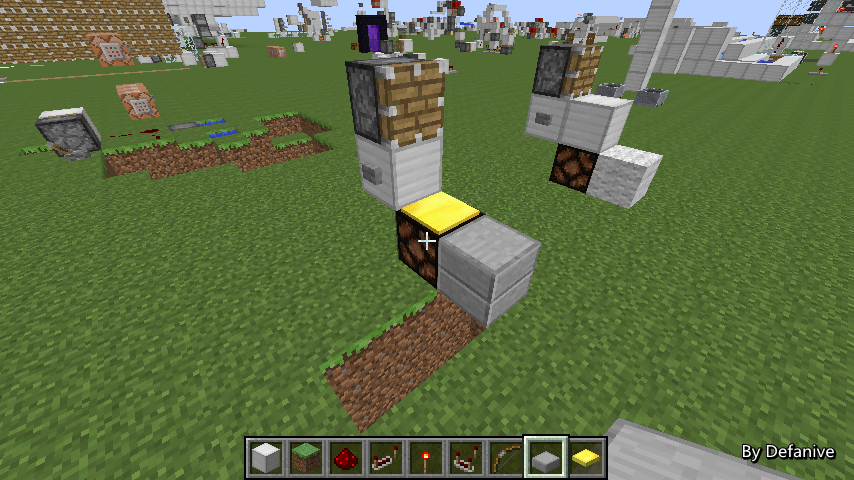
28828楼
2014-06-12 23:25
首页
上一页
286
287
288
289
290
291
291
292
293
294
295
296
下一页
末页